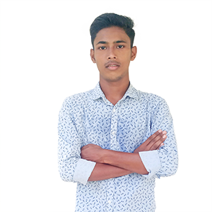

Hellow there! I am saif foysal. I have 4-year experience in eCommerce industry and strong knowledge in image editing focused on increasing customer attention on platforms like Amazon, eBay,ali express and other e-commerce platforms. Professional photo editing, color enhancement, retouching, background removal. An excellent creative eye and immense knowledge of photography. AND, I am professional Senior Front End developer as a PSD2HTML specialist since 2015, In my professional career i have done more then 130 projects .